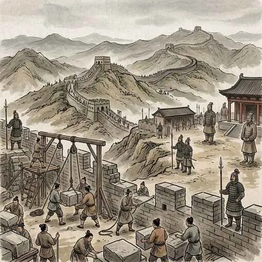
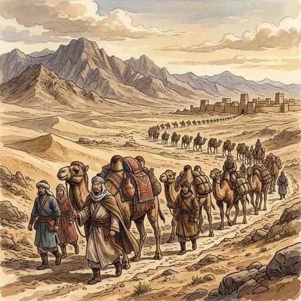
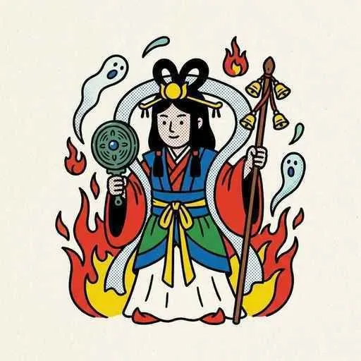

2. 文明と東アジア
世界の四大文明が栄えた後、日本を含む「東アジア」の地域はどのようにつながり、発展していったのでしょうか？今回は、中国を統一した巨大帝国の誕生と、その影響を受けて動き出す朝鮮半島、そして古代日本の成り立ちについて詳しく見ていきましょう！
1. 中国の統一と巨大帝国の誕生
前回の四大文明で登場した中国文明ですが、その後長い戦乱の時代（春秋・戦国時代）に入りました。この乱世を終わらせ、中国を初めて統一したのが「秦」です。
① 秦の始皇帝（紀元前221年〜）
紀元前221年、中国を統一した秦の王は、自らを最初の皇帝「始皇帝（しこうてい）」と名乗りました。彼は国を治めるために、それまでバラバラだった貨幣（お金）や文字、物差し（単位）などを統一し、全国を道路で結びました。さらに、北方の遊牧民（匈奴）の侵入を防ぐために、巨大な万里の長城（ばんりのちょうじょう）を修築したことでも有名です。しかし、厳しいルールや思想統制を行ったため、始皇帝の死後、秦はすぐに滅びてしまいました。

図1：文字や度量衡を統一し、中央集権体制を築いた「秦の始皇帝」
② 漢帝国とシルクロード
秦の次に中国を統一したのが「漢（かん／前漢・後漢）」です。漢は約400年もの間続く安定した大帝国となり、現在の中国の主流民族である「漢民族」や「漢字」という言葉の由来になりました。
漢の時代には、西方（ローマ帝国など）を結ぶ交易路であるシルクロード（絹の道）が開かれました。中国からは特産の絹織物が西へ送られ、西方からは名馬やブドウ、ザクロなどが中国にもたらされ、東西の文化や文物が盛んに行き交いました。

図2：砂漠を越えて絹やブドウ、西方の名馬などが行き交った「シルクロード」
③ 孔子と儒教
戦乱の時代、思想家の孔子（こうし）は、「仁（思いやり）」と「礼（礼儀）」を重んじる道徳的な政治を説きました。この教えはのちに儒教（じゅきょう／儒学）としてまとめられ、漢の国教となって以降、中国だけでなく日本や朝鮮半島など、東アジア全体の政治や道徳の根本的な考え方として大きな影響を与え続けることになります。
2. 朝鮮半島の動きと「任那」
中国の巨大帝国の影響は、隣の朝鮮半島にも及びました。4世紀ごろになると、朝鮮半島には3つの強い国が成立し、激しく勢力を争うようになります（三国時代）。
- 高句麗（こうくり）：朝鮮半島北部から中国東北部にかけ、広大な領土を誇った武力に優れた国。
- 百済（くだら）：半島南西部にあり、日本のヤマト政権と極めて親しい関係を築きました。のちに日本へ仏教や漢字、儒教を伝えた非常に重要な国です。
- 新羅（しんら）：半島南東部にあり、のちに唐（中国）と同盟を結んで朝鮮半島を統一することになります。
また、朝鮮半島南部（現在の釜山周辺など）には、小さな国々がまとまった任那（みまな／加羅）と呼ばれる地域がありました。日本のヤマト政権は、当時極めて貴重だった「鉄資源」や、渡来人が持つ「先進技術（焼き物や文字など）」を獲得するため、百済と同盟を組んで任那の地域に深く進出・介入していました。
3. 古代日本（倭）と中国の歴史書
その頃の日本（当時の中国からは「倭（わ）」と呼ばれていました）は、まだ自分たちの歴史を文字で記録していませんでした。そのため、当時の日本の様子は、文字を持っていた**中国の歴史書**を通じて知ることができます。テストには以下の3つの歴史書が必ず出題されます！
① 『漢書』地理志（紀元前1世紀ごろ）
「倭（日本）の地には100余りの国があり、楽浪郡（現在の平壌付近にあった中国の役所）に使者を送っていた。中には定期的に挨拶に来る国もあった」と記されています。日本がまだバラバラの小国に分かれていたことがわかります。
② 『後漢書』東夷伝（57年）
「建武中元二年（57年）、倭の奴国（なこく）の王が使者を送り、光武帝（後漢の皇帝）から金印（きんいん）を授かった」とあります。この金印は、江戸時代に福岡県の**志賀島（しかのしま）**で偶然発見され、国宝に指定されています。印面には「漢委奴国王（かんのわのなのこくおう）」の5文字が刻まれており、「漢の皇帝が、倭の奴国の王として認めた」という意味になります。
図3：江戸時代に農作業中に発見された「漢委奴国王」の金印
③ 『魏志』倭人伝（300年ごろ）
「三国志」で有名な『魏志』倭人伝には、3世紀の日本の様子が詳しく描かれています。「倭国は大いに乱れたが、30余りの国々が共同で一人の女王を立てることで乱を鎮めた。その女王の名は卑弥呼（ひみこ）といい、邪馬台国（やまたいこく）に都を置き、鬼道（占いやまじない）で国を治めた」と記されています。
卑弥呼は239年、中国の「魏」の都に使者を送り、皇帝から「親魏倭王（しんぎわおう）」の称号や、銅鏡100枚などのたくさんの贈り物を授かりました。これは中国の力をバックにつけることで、日本国内での支配力を強めようとする外交戦略でした。

図4：占いや祈りを用いて国をまとめあげた邪馬台国の女王「卑弥呼」
🔥 定期テスト対策・整理用のまとめ
歴史の定期テストでは、中国の歴史書と日本の状況をクロスさせて出題されます！以下の表を頭の中で完成させられるように暗記しましょう！
| 歴史書の名前 | 世紀 | 日本の状況（キーワード） |
|---|---|---|
| 『漢書』地理志 | 紀元前1世紀 | 100余りの国に分裂 |
| 『後漢書』東夷伝 | 1世紀（57年） | 奴国の王が使者を送り、金印を授かる |
| 『魏志』倭人伝 | 3世紀 | 邪馬台国の女王卑弥呼が魏から親魏倭王とされる |